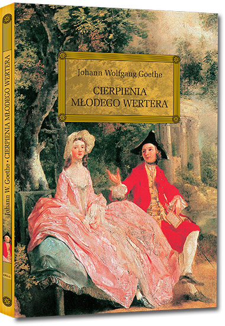

Literatura
Niemiecka literatura powstała w średniowieczu. Najważniejsi autorzy tej epoki to Walther von der Vogelweide i Wolfram von Eschenbach. Pieśń o Nibelungach, której autor jest nieznany, jest jednym z najważniejszych dzieł literatury niemieckiej. Dzieła te napisane zostały w języku średnio-wysoko-niemieckim, który jest dla współczesnych Niemców zupełnie niezrozumiały. Nowożytną niemczyznę stworzył Marcin Luter swoim tłumaczeniem Biblii. Za najważniejszych autorów literatury niemieckiej uważani są Christoph Martin Wieland, Johann Wolfgang von Goethe i Friedrich Schiller, Friedrich Hölderlin i Heinrich Heine oraz bracia Grimm; w dwudziestym wieku Niemcy miały kilku noblistów w dziedzinie literatury, takich jak: Theodor Mommsen (1902), Paul Heyse (1910), Gerhart Hauptmann (1912), Thomas Mann (1929), Hermann Hesse (1946), Heinrich Böll (1972), Günter Grass (1999). W dwudziestym pierwszym wieku nagrodę tę zdobyła Herta Müller (2009).

Johann Wolfgang von Goethe - Cierpienia młodego Wertera